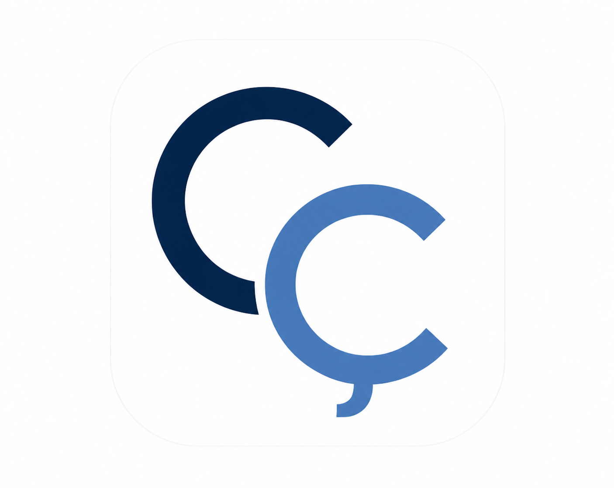
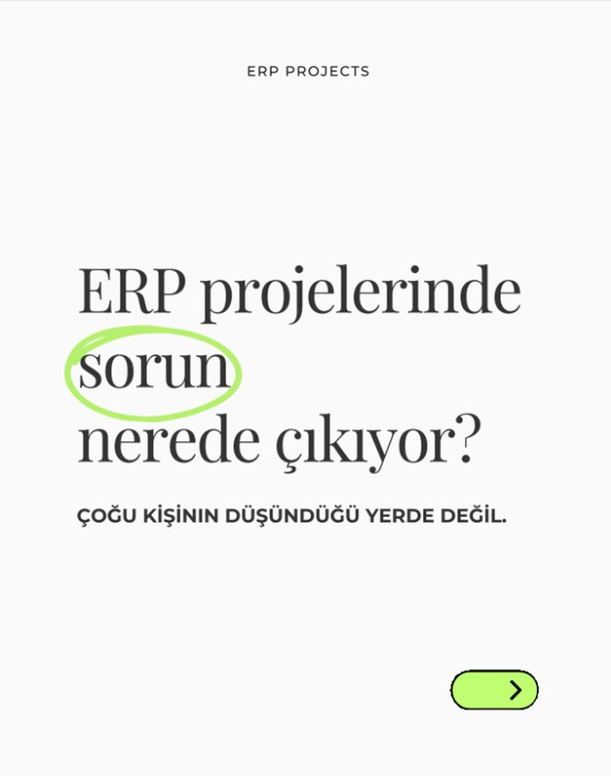
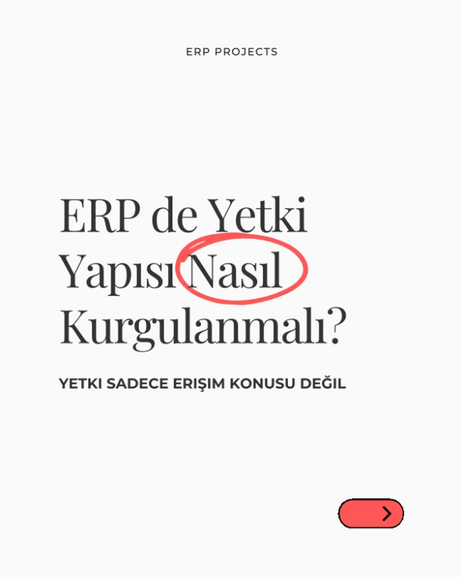
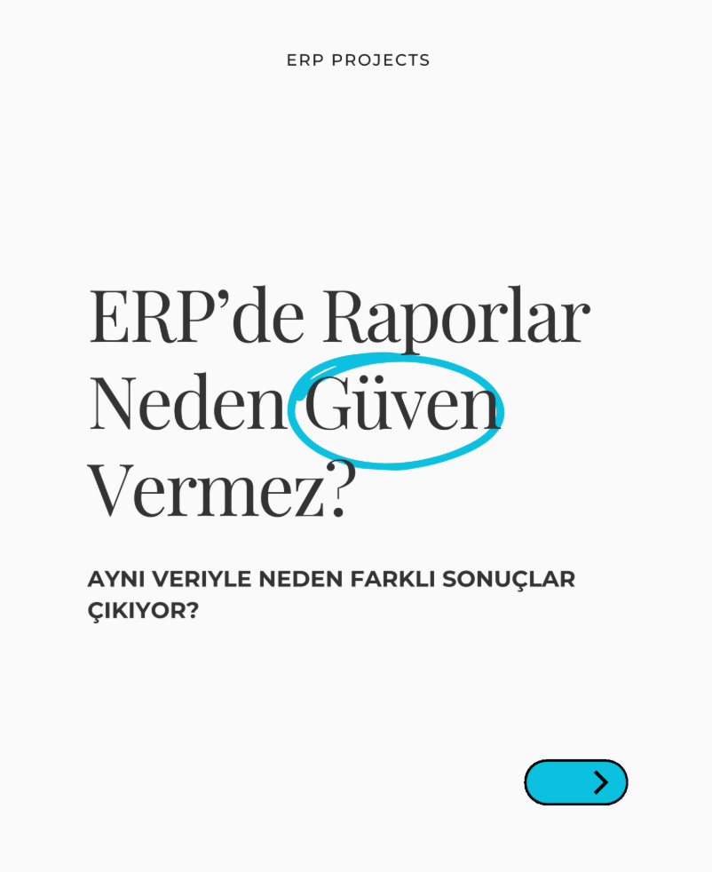
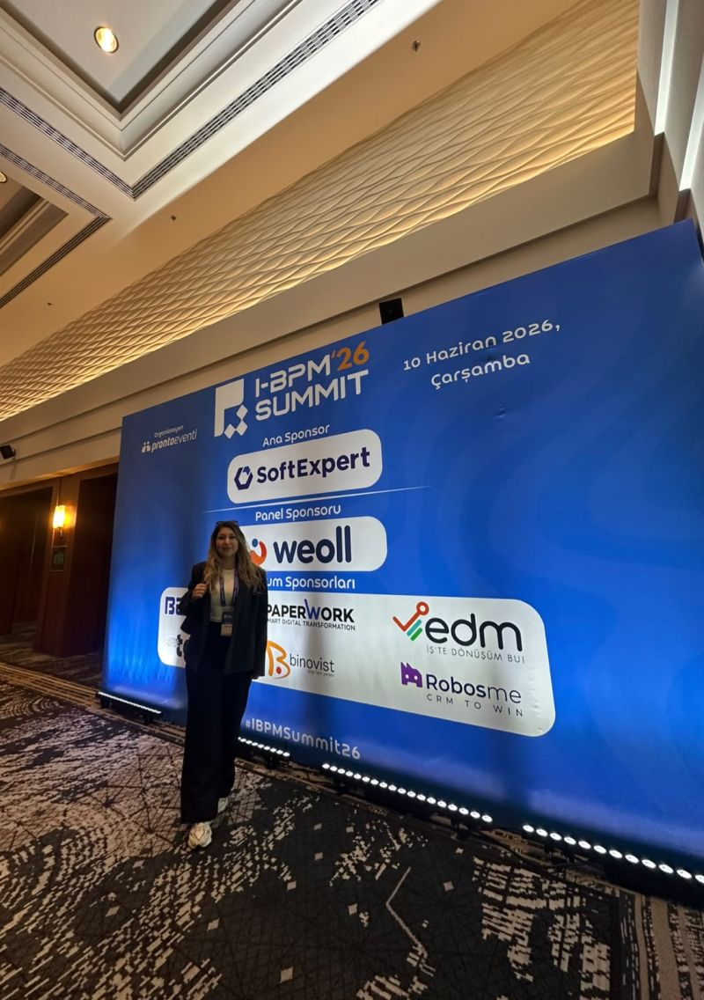
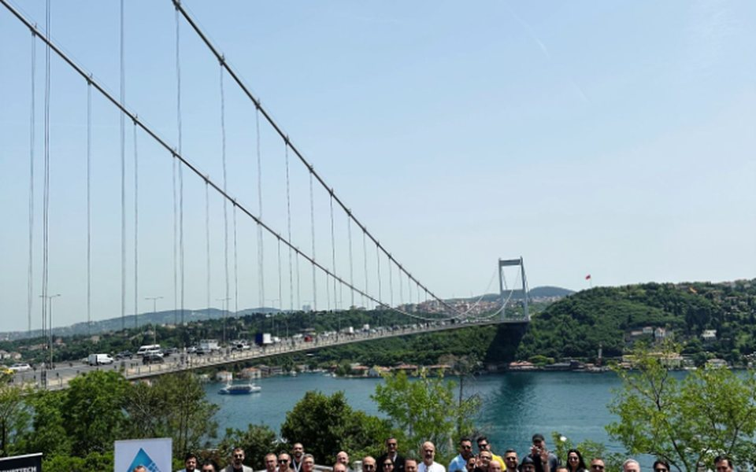
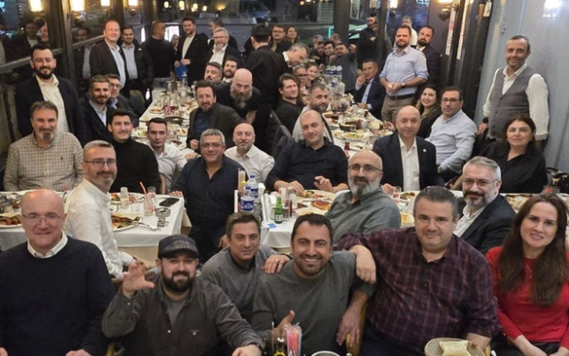
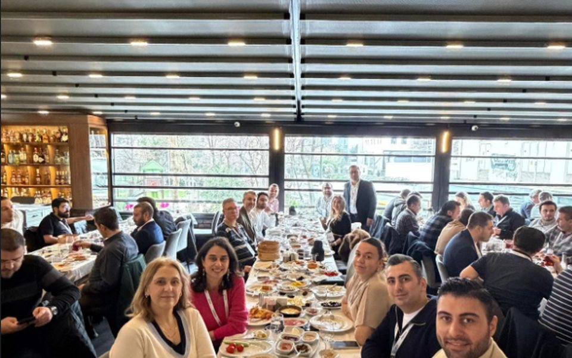
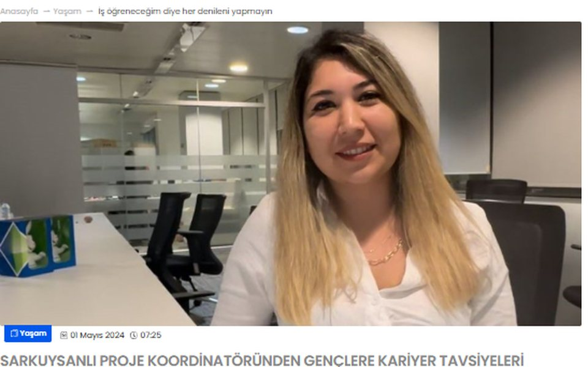

ERP Danışmanlığı
Süreç analizi, uyarlama projeleri, kullanıcı eğitimleri ve saha deneyimi.

Cansın Çini ERP Proje KoordinatörüCanias ERP • İş Süreçleri • Dijital Dönüşüm
Canias ERP | İş Süreçleri ve Dijital Dönüşüm
ERP projelerinde analiz, süreç tasarımı, teknik geliştirme, kullanıcı koordinasyonu ve canlı geçiş süreçlerini uçtan uca yönetmeye odaklanıyorum.
Hakkımda
2015 yılından bu yana ERP projelerinin farklı aşamalarında görev alıyorum. Kariyerime ERP danışmanı olarak başlayıp, ERP uzmanlığı ve proje koordinatörlüğü rollerinde devam ederek hem müşteri hem de danışmanlık tarafında önemli deneyimler kazandım.
Bugüne kadar üretim, sağlık, finans, eğitim ve hizmet sektörlerinde; satış, satınalma, stok yönetimi, finans, bütçe, lojistik ve entegrasyon süreçlerini kapsayan projelerde yer aldım. Canias ERP üzerinde süreç analizi, sistem tasarımı, geliştirme, kullanıcı eğitimi, test yönetimi ve canlı geçiş çalışmalarını yürüttüm.
ERP projelerinde başarının yalnızca yazılımdan değil; doğru süreçlerden, güvenilir veriden ve kullanıcı adaptasyonundan geçtiğine inanıyorum. Bu nedenle teknik çözümler geliştirirken iş ihtiyaçlarını ve operasyonel etkileri birlikte değerlendirmeye çalışıyorum.
Amacım, kurumların iş süreçlerini daha verimli, daha sürdürülebilir ve daha ölçülebilir hale getirecek çözümler üretmek.
Kariyer Yolculuğu
Süreç analizi, uyarlama projeleri, kullanıcı eğitimleri ve saha deneyimi.
Canias ERP, teknik geliştirmeler, operasyonel süreçler ve kurumsal raporlama.
Planlama, paydaş yönetimi, UAT, canlı geçiş ve ekipler arası koordinasyon.
İş süreçleri, entegrasyonlar, sürdürülebilir çözümler ve dijital dönüşüm odağı.
Uzmanlık Alanları
Analiz, kapsam takibi, test süreçleri, kullanıcı koordinasyonu ve canlı geçiş hazırlıkları.
Canias ERP süreçleri, TROIA geliştirmeleri, ekran düzenlemeleri ve operasyonel iyileştirmeler.
Mevcut durum analizi, süreç tasarımı, standartlaştırma ve departmanlar arası akışların netleştirilmesi.
Kurumsal süreçlerin daha izlenebilir, ölçülebilir ve sürdürülebilir hale getirilmesi.
Web servisleri, e-belge süreçleri ve üçüncü parti sistemlerle ERP entegrasyonlarının kurgulanması.
Operasyonel takip, KPI yönetimi, bütçe analizleri ve yönetsel karar süreçlerini destekleyen raporlama çözümleri.
Deneyim
Satış, üretim, lojistik, stok ve raporlama süreçlerinde ERP iyileştirme çalışmaları.
Finansal süreçler, entegrasyonlar, belge akışları ve operasyonel kontrol mekanizmaları.
İdari süreçlerin dijitalleştirilmesi, kullanıcı ihtiyaçlarının analiz edilmesi ve ERP süreçlerine uyarlanması.
Eğitimler
ERP danışmanlığı ve yazılım geliştirme alanında edindiğim deneyimler doğrultusunda, bireysel ve kurumsal ihtiyaçlara yönelik eğitim programları hazırlıyorum. Konuları iş süreçleri, teknik geliştirme ve proje uygulamalarından örneklerle ele alıyorum.
ERP danışmanlığına yönelmek, mevcut ERP bilgisini geliştirmek veya TROIA öğrenmek isteyenler için birebir eğitimler.
ERP iş süreçleri, ihtiyaç analizi, proje metodolojisi, test ve canlıya geçiş çalışmalarına giriş.
SQL temelleri, TROIA programlama, ekran yapıları, trace ve uygulamalı temel geliştirme.
Müşteri talepleri üzerinden analiz, UAT, veri kontrolü, hata takibi ve canlıya geçiş uygulamaları.
Bireysel program süreleri standart eğitim planını ifade eder. Bir eğitim saati 60 dakikadır. İçerik ve uygulama yoğunluğu katılımcının bilgi seviyesine göre uyarlanabilir.
ERP kullanıcılarının ve teknik ekiplerin yetkinliklerini geliştirmek için kurumun ihtiyaçlarına göre planlanan eğitimler.
ERP iş akışlarını ve modüller arası ilişkileri kurumun süreçleri üzerinden ele alan eğitim.
TROIA geliştirme ortamı, temel programlama yapıları, SQL ve kod takibine odaklanan eğitim.
Mevcut kod analizi, teknik uyarlama, trace ve uygulama örnekleriyle geliştirme becerilerini ilerletme.
Kurumsal programlarda süre ve uygulama kapsamı; katılımcı sayısı, bilgi düzeyi, kullanılan ERP versiyonu ve kurum ihtiyaçlarına göre birlikte planlanır.
BE-01 · 16 saat
ERP sistemlerinin işleyişini, temel iş süreçlerini ve danışmanların projelerde üstlendiği sorumlulukları tanıtmak; analiz, uygulama, test ve canlıya geçiş süreçlerinde temel bilgi kazandırmak.
BE-02 · 40 saat
ERP sistemlerinin teknik yapısını tanıtmak; SQL ve TROIA temellerini öğretmek; mevcut kodları okuyabilme, akışı takip edebilme ve başlangıç düzeyinde geliştirme yapabilme becerilerini desteklemek.
BE-03 · 24 saat
ERP projelerindeki analiz, dokümantasyon, test, veri kontrolü ve canlıya geçiş çalışmalarını uygulama örnekleri üzerinden ele almak.
KE-01 · Kuruma özel
Çalışanların ERP iş süreçlerini ve modüller arasındaki ilişkileri daha iyi anlamalarını, sistemi iş akışlarına uygun ve etkin biçimde kullanmalarını desteklemek.
KE-02 · Kuruma özel
Teknik ekiplerin TROIA geliştirme ortamını ve temel kod yapılarını tanımasını, mevcut geliştirmeleri anlayabilmesini ve başlangıç düzeyinde teknik çalışmalar yapabilmesini desteklemek.
KE-03 · Kuruma özel
TROIA deneyimi bulunan ekiplerin mevcut uygulamaları analiz etme, geliştirme ihtiyaçlarını değerlendirme, hata inceleme ve teknik uyarlama yetkinliklerini geliştirmek.
İçerikler

ERP Projects
ERP projelerinde yaşanan problemlerin önemli bir kısmı yazılımdan değil; süreç, veri ve organizasyon yönetiminden kaynaklanır.
LinkedIn'de Oku →
ERP Governance
Yetkilendirme yalnızca ekran erişimi değildir. Doğru kurgulanmış bir yetki yapısı süreç güvenliğinin temelidir.
LinkedIn'de Oku →
ERP REPORTING
Veri kalitesi, süreç yönetimi ve raporlama standartlarının karar destek mekanizmalarına etkisi üzerine değerlendirmeler.
LinkedIn'de Oku →Etkinlikler ve Topluluklar

I-BPM Summit 2026
BPM, Process Mining, Yapay Zeka ve dijital dönüşüm odaklı oturumların yer aldığı, sektör profesyonelleriyle bilgi paylaşımı ve networking fırsatı sunan etkinlik.
Etkinliği Gör →
BiTekDer
Siber güvenlik ve teknoloji gündeminin ele alındığı sektörel buluşma.
Etkinliği Gör →
Networking
Farklı sektörlerden teknoloji profesyonelleriyle deneyim paylaşımı ve networking.
Etkinliği Gör →
İTOC360 • BiTekDer
Operasyon yönetimi ve dijital dönüşüm başlıklarında gerçekleştirilen sektörel buluşma.
Etkinliği Gör →
Röportaj
Kariyer yolculuğum, proje koordinatörlüğü deneyimlerim ve genç profesyonellere yönelik görüşlerimin yer aldığı röportaj.
Röportajı Oku →İletişim